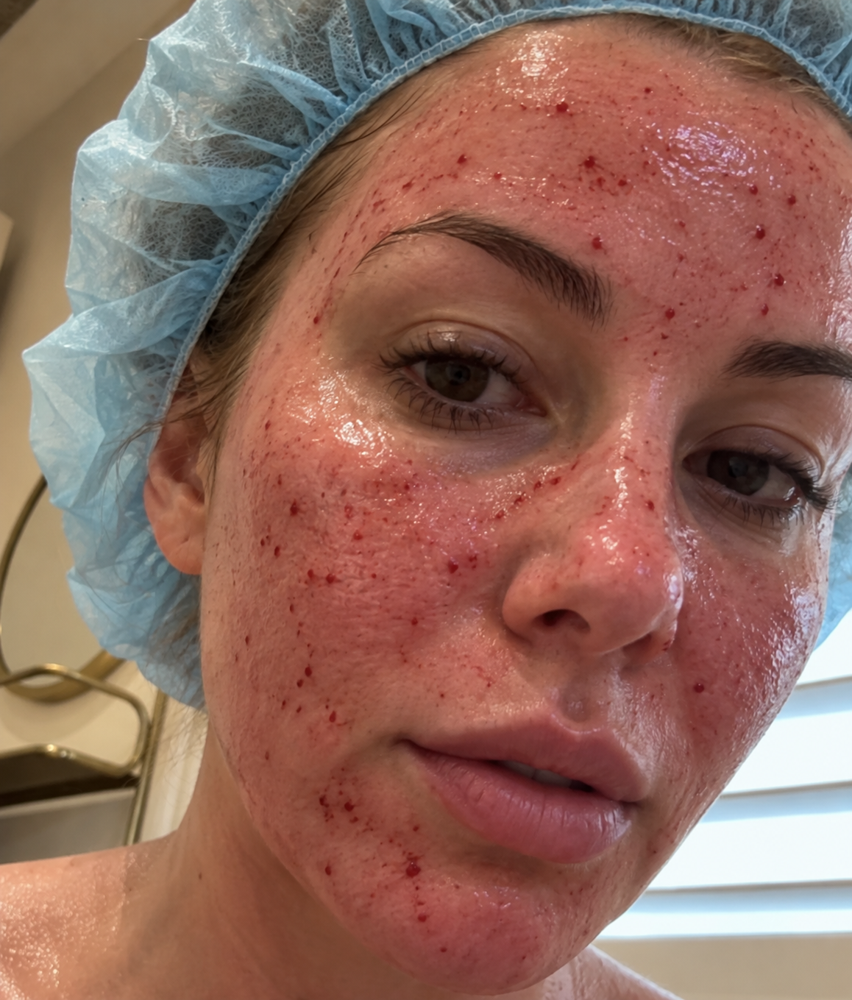
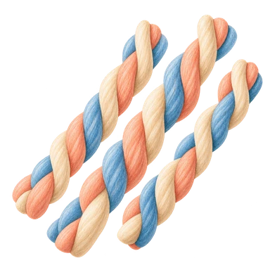
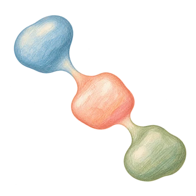
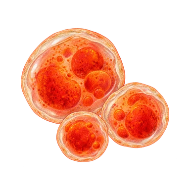
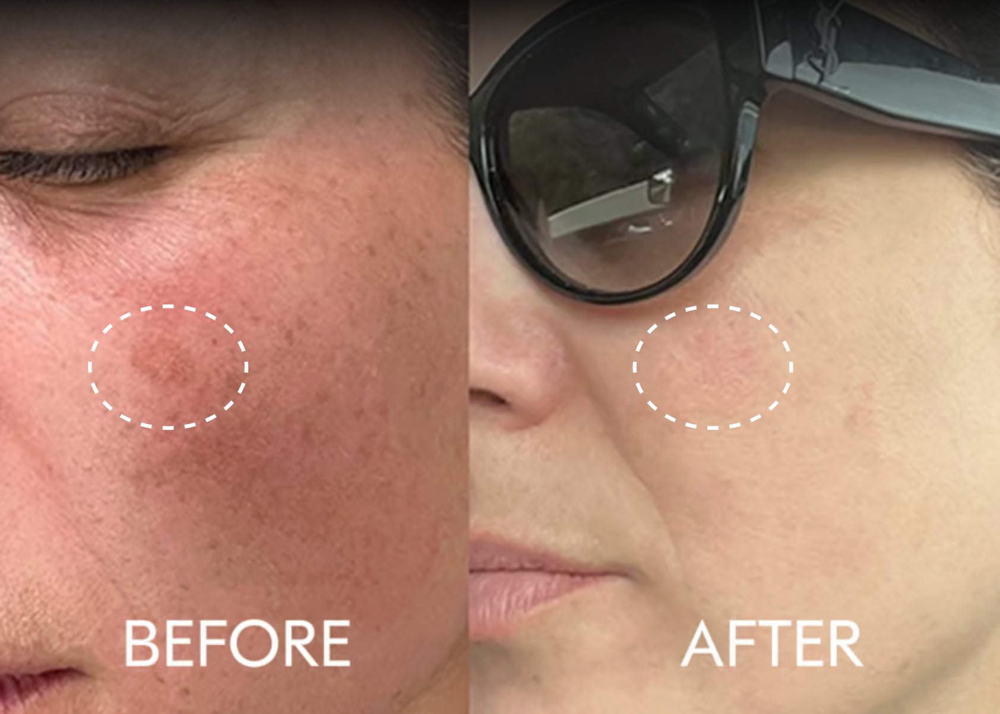
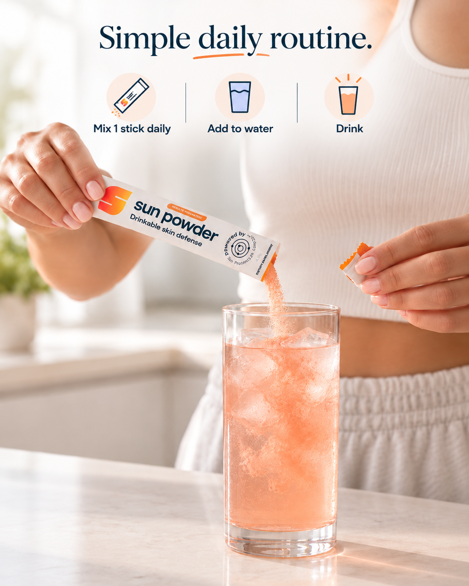

Treating summer sun damage this fall? Your skin needs careful sun protection as it heals—and nutrients for normal repair and antioxidant defenses.
LM
Lorraine Peterson, Reporter
Updated
5 min read · Sponsored content
Why your dermatologist takes post-laser care so seriously.
Fall is laser season. Less sun and cooler months make it the natural time to work on sun spots, uneven tone, and fine lines.
But the appointment is where the work starts, not where it ends. Laser resurfacing damages the skin on purpose, and your results depend on how well it repairs afterward.
That repair takes weeks, and treated skin stays sensitive the whole time. Your clinic’s instructions come first: when to start sunscreen, when to bring back your usual products, what to avoid. Follow them exactly.
This is where Sun Powder fits. Stanford-trained dermatologist Dr. Teo Soleymani formulated a comprehensive skin health supplement for his patients. He recommends Sun Powder as a daily source of vitamins and antioxidants that works alongside sunscreen to protect and repair your skin from within.

After laser resurfacing, your skin needs time to heal.
Keep new sun damage from undermining your treatment.
Sun exposure can darken pigmentation and cause new spots after treatment. Sun protection is part of caring for the results you paid for.
Keep direct sun off treated skin.
Use shade and protective clothing as directed by your clinic.
Ask when to start sunscreen.
Once your skin is ready, use broad-spectrum SPF 30 or higher and reapply as directed.
Keep protecting your skin between treatments.
Fading a spot does not prevent new pigmentation.
Great skin isn’t only built in the clinic. Why Dr. Sol recommends a holistic approach.
Topicals and in-office treatments do the heavy lifting. But Dr. Soleymani tells his patients the same thing he’d tell anyone: your skin is only as well supplied as the rest of you. That means a balanced diet, good nutrition, and, when it makes sense, a supplement.
Skin is constantly repairing itself, and that takes raw materials. Vitamin C helps your body make collagen and provides antioxidant support.
Astaxanthin is the most powerful antioxidant that helps reduce the signs of aging. Vitamin B3 helps repair some of the DNA damage done to your cells from UV damage.
That’s why he helped develop Sun Powder: eight ingredients, one daily drink, built to back up the rest of your routine. It works alongside your skincare routine to give your skin added protection and support from within.
Outside
Sunscreen limits UV
Inside
Sun Powder supplies nutrients for normal repair
Treatments address existing damage. Sun protection limits UV exposure. Nutrition supports normal skin repair.
Developed by two dermatologists.
Sun Powder was developed by Dr. Teo Soleymani, a Stanford-trained dermatologist, and Dr. Michael Abrouk, a laser and cosmetic dermatologist.
Dr. Teo SoleymaniDermatologist Sun Powder co-founderDr. Michael AbroukLaser and cosmetic dermatologist Sun Powder co-founder
6 reasons why dermatologists recommend Sun Powder as part of comprehensive skin health care
Supports your skin all year round.
Your skin needs care between appointments. Sun Powder adds daily nutrition and antioxidant support through every season.
Easy, simple routine—just one stick a day.
Mix one stick into water and drink. An easy daily habit to keep up at home, at work or while traveling.
Clinically studied ingredients.
Ingredients in the formula have been studied for three concerns linked to sun exposure: UV-related redness, pigmentation and moisture loss.
Trusted by practitioners.
Created by two dermatologists and sold in hundreds of dermatology clinics across the country.
Supports skin health from within.
The other side of skincare. Topicals treat the outside; this daily vitamin and antioxidant mix helps fade dark spots and supports more resilient skin from the inside out.
Complements your sunscreen routine.
Getting sunscreen coverage and reapplication right takes attention. Sun Powder adds antioxidant support alongside sunscreen, shade and protective clothing. Keep applying and reapplying sunscreen as directed.
Dr. Soleymani discusses Sun Powder’s ingredients with Dr. Gabrielle Lyon.
What one daily serving adds.

Vitamin C for collagen formation
250 mg
Your body needs vitamin C to make collagen, the structural protein involved in skin repair. Vitamin C also provides antioxidant support against free-radical damage.

Glutathione + antioxidants
50 mg glutathione
Glutathione is an antioxidant studied for its effects on skin pigmentation. Each stick pairs it with vitamin C and astaxanthin for daily antioxidant support alongside your routine for fading dark spots.

Astaxanthin for glow and antioxidant protection
4 mg
Astaxanthin provides antioxidant support against free radicals generated by UV exposure. Nicknamed a “master antioxidant,” it supports healthy skin aging and glow. In a laboratory comparison, astaxanthin showed about 6,000 times vitamin C’s activity at neutralizing singlet oxygen, a reactive form of oxygen.
Ingredients studied for skin’s response to UV
240 mg + 4 mg
Each stick provides 240 mg of polypodium fern extract and 4 mg of astaxanthin. Researchers have studied oral preparations of these ingredients for their effects on skin’s response to UV exposure.
Also included: vitamin B3 (nicotinamide), inositol, bovine collagen peptides and hyaluronic acid. Open the full formula below to see every amount.
See all ingredients and amounts +
Sun Powder core formula per serving
Ingredient
Amount
Nicotinamide / vitamin B3
1,000 mg
Inositol
1,000 mg
Vitamin C (ascorbic acid)
250 mg
Polypodium leucotomos leaf extract
240 mg
Bovine collagen peptides
100 mg
L-glutathione
50 mg
Hyaluronic acid
25 mg
Astaxanthin
4 mg
90 days of usage faded dark spots and melasma

Individual result. Results vary.
The ingredient complex in Sun Powder has been studied to help fade dark spots, improve skin elasticity and hydration, and continued usage helps repair some of the impacts of sun damage.
Open a stick and mix it with water according to the package directions. Keep the box at home and take individual servings to work or on trips.

One stick mixed with water supplies one daily serving.
What customers are saying
“I already take enough pills every morning, so Sun Powder just fit my routine better. I throw a packet into a big glass of water while I’m making coffee and that’s basically it.”
Read full reviewShow less
My dermatologist actually told me about Heliocare first. I went home, Googled it, and ended up going way too far down the oral photoprotection rabbit hole.
I already take enough pills every morning, so Sun Powder just fit my routine better. I throw a packet into a big glass of water while I’m making coffee and that’s basically it.
Taste is fine. Not incredible, but I’ve definitely had worse supplements.
I’m about two months in now and already reordered. I still wear SPF every day, obviously. I just like having something else in my routine that was developed by dermatologists and is easy enough that I actually remember to take it.
“A friend sent it to me after my last laser and I honestly thought it sounded a little gimmicky at first. Then I saw it was created by dermatologists and ended up trying it.”
Read full reviewShow less
I spend an embarrassing amount of money on my skin. Fraxel, IPL, Botox, the whole thing. So at this point I’m pretty disciplined about what I do between appointments too.
Every morning it’s vitamin C, moisturizer, SPF, hat if I’m going to be outside, and now Sun Powder.
A friend sent it to me after my last laser and I honestly thought it sounded a little gimmicky at first. Then I saw it was created by dermatologists and ended up trying it.
I’m on my third box.
I can’t tell you there’s some dramatic before-and-after because that’s not really why I take it. It’s just become one of those boring things I do every morning… I have noticed I burn a lot less, which is great.
“But it takes ten seconds, I actually remember to do it, and I packed the packets for the trip instead of leaving them at home with the rest of my supplements.”
Read full reviewShow less
I bought this about five weeks before a trip to Mallorca because I’m the person who gets extremely serious about my skin approximately three weeks before every vacation.
I assumed Sun Powder was going to be another expensive wellness powder I used for ten days and forgot about.
Surprisingly, I kept taking it.
The watermelon flavor is a little sweeter than I’d personally choose, so I use a lot of water and ice. But it takes ten seconds, I actually remember to do it, and I packed the packets for the trip instead of leaving them at home with the rest of my supplements.
And yes, I still wore SPF 50 and reapplied. This isn’t replacing sunscreen for me. It’s just one more part of the routine now. I like that it’s a holistic, inside-out approach, too.
“What surprised me is that this is probably the first powdered supplement I’ve actually stayed consistent with. It lives next to my coffee maker, I mix it while the coffee is brewing, and I’m already on my second order.”
Read full reviewShow less
I am unfortunately the kind of person who reads PubMed before buying a supplement.
I first heard about oral photoprotection on a podcast (Gabrielle Lyon, maybe), spent probably two hours reading about the category, compared a few products, and almost didn’t buy Sun Powder because of the price.
What eventually got me was the formulation and the fact that dermatologists actually developed it.
I’ve taken it almost every morning for five months now. Missed maybe four or five.
My skin feels smoother and I’ve noticed my liver spots are gone. What surprised me is that this is probably the first powdered supplement I’ve actually stayed consistent with. It lives next to my coffee maker, I mix it while the coffee is brewing, and I’m already on my second order.
Swipe to browse
1 / 4
Add daily nutrition to your post-laser care.
Support normal skin function, collagen formation and antioxidant defenses with Sun Powder. One stick mixed with water gives you a daily serving of the dermatologist-developed formula.